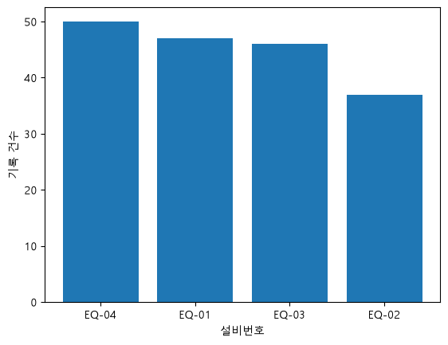
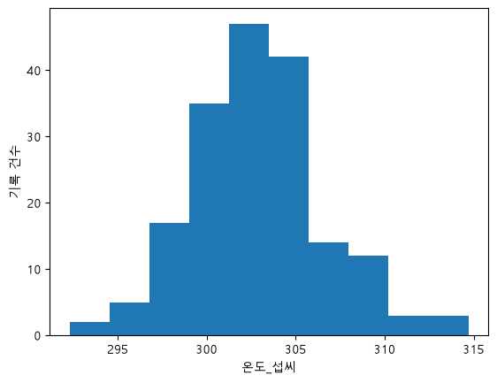

6차시 실습지
그래프로 공정 상태 이해하기 — 실습지
실습지 사용법
- 모든 문항은 반도체 공정 기록
week06_process_visualization.csv(df, 180행, 설비 4대, 교육용 가상 데이터)로 푼다. - 문제 1~8은 노트북 8~11단계의 같은 번호 칸에서 실행한다. 힌트의 "N단계"는 같은 모양의 쉬운 예제 단계다.
개념 확인 1. 질문과 그래프 연결
| 질문 | 그래프 후보 |
|---|---|
| ① 시간이 지나며 온도가 어떻게 변했나? | A. 히스토그램 B. 박스플롯 C. 산점도 D. 막대그래프 E. 선 그래프 |
| ② 설비마다 기록이 몇 건인가? | |
| ③ 온도 값이 주로 어디에 몰려 있나? | |
| ④ 온도가 높으면 두께도 두꺼운가? | |
| ⑤ 어느 설비의 온도가 가장 들쭉날쭉한가? |
① E ② D ③ A ④ C ⑤ B
개념 확인 2. 그래프 "하나"가 뜻하는 것
| 표시 | 뜻 후보 |
|---|---|
| ① 온도-두께 산점도의 점 하나 | A. 온도 구간 하나에 들어간 기록 수 B. 공정 기록(행) 하나 C. 설비 하나의 온도 전체를 요약한 것 D. 설비 하나의 기록 건수 |
| ② 설비별 막대그래프의 막대 하나 | |
| ③ 온도 히스토그램의 막대 하나 | |
| ④ 설비별 박스플롯의 상자 하나 |
① B ② D ③ A ④ C. 막대그래프 가로축은 이름(설비), 히스토그램 가로축은 숫자 구간(온도)이다.
개념 확인 3. 박스플롯 부분 이름 맞히기
| 부분 | 뜻 후보 |
|---|---|
| ① 상자 안 가로선 | A. 다른 값들과 멀리 떨어진 값 B. 가운데 절반(50%)의 기록이 들어 있는 범위 C. 줄 세웠을 때 한가운데 값(중앙값) D. 동그라미를 뺀 가장 큰 값·가장 작은 값까지 뻗은 선 |
| ② 상자 | |
| ③ 수염 | |
| ④ 동그라미 점 |
① C ② B ③ D ④ A. 동그라미 점은 "잘못된 값"이 아니라 "멀리 떨어진 값" 표시다.
문제 1. 측정시간을 날짜로 바꾸기 (노트북 8단계)
할 일
빈칸을 채워
측정시간을 날짜·시각으로 바꾸자. 힌트: 1단계 ice["날짜"]와 같은 모양.
df["측정시간"] = pd.____(df["측정시간"])
to_datetime. 결과 dtype: datetime64[us], 값은 2024-03-01 05:00:00처럼 시각까지 붙는다.문제 2. 시간에 따른 온도 (노트북 9단계)
할 일
plt.____(df["측정시간"], df["온도_섭씨"])로 선 그래프를 그리고, 평균 302.8℃ 하나로는 안 보이는 "전체 흐름"을 적자. 힌트: 2단계와 같은 모양.

plot. 온도가 서서히 오른다(드리프트): 3월 평균 301.4℃ → 4월 304.8℃.
문제 3. 설비별 기록 건수 (노트북 9단계)
할 일
빈칸을 채워 막대그래프를 그리고, 기록이 가장 많은 설비와 가장 적은 설비를 적자. 힌트: 3단계와 같은 모양.
counts = df["설비번호"].____() plt.____(counts.index, counts)

value_counts, bar. EQ-04 50 / EQ-01 47 / EQ-03 46 / EQ-02 37. 건수가 적다고 문제 설비는 아니다.
문제 4. 온도가 몰린 구간 (노트북 9단계)
할 일
plt.____(df["온도_섭씨"], bins=10)로 히스토그램을 그리고, 온도가 주로 몰린 곳을 적자. 힌트: 4단계와 같은 모양(180건이라 10칸).

hist. 가장 높은 막대는 약 301.3~303.5℃(47건), 가운데 세 막대에 180건 중 124건이 몰려 있다.
문제 5. 온도와 두께 (노트북 10단계)
할 일
plt.____(df["온도_섭씨"], df["두께_nm"])로 산점도를 그리자. 점 모양은? 동료가 "온도가 두께의 원인이네!"라고 하면 어떻게 답할까? 힌트: 5단계와 같은 모양.
scatter. 오른쪽 위로 기운다(300℃ 미만 34건 평균 두께 98.6nm, 305℃ 이상 43건 104.4nm).
"함께 움직이는 건 맞지만 원인이라고 할 수는 없어. 지금은 온도를 두께의 원인 후보까지만 말할 수 있어."
문제 6. 온도와 압력 (노트북 10단계)
할 일
문제 5에서 세로축만 바꿔 그리고 두께 산점도와 비교하자. 힌트: 두 빈칸에 같은 열 이름.
plt.scatter(df["온도_섭씨"], df["____"])
plt.ylabel("____")
압력_Pa. 둥글게 흩어진다(평균 압력 1011.6과 1011.8). 같은 온도 열도 짝에 따라 보이는 것이 다르다.문제 7. 설비별 온도 박스플롯 (노트북 11단계)
할 일
빈칸을 채워 그리고 답하자. 힌트: 6단계
ice.boxplot(column="판매량_개", by="날씨")와 같은 모양.
df.____(column="온도_섭씨", by="____")
- 상자가 가장 긴 설비는? 네 설비의 가운데 선은 비슷한가?
- EQ-03의 동그라미 점은 지워야 할 잘못된 값인가?

boxplot, 설비번호.
1) EQ-02(300.6~307.3℃, 상자 길이 6.7℃ / 다른 설비 3.1~4.1℃). 가운데 선은 302.0~303.4℃로 비슷하다. 2) 아니다. 멀리 떨어진 값 표시일 뿐이다.
문제 8. 설비별 온도 숫자 요약과 한 문장 (노트북 11단계)
할 일
"네 설비의 평균 온도는 ____~____℃로 비슷하지만, 설비 ____의 표준편차가 ____로 가장 커서 온도가 가장 들쭉날쭉하다."
print(df.groupby("설비번호")["온도_섭씨"].describe().round(1))을 그대로 실행하고(groupby는 7차시에 배운다) 결과로 문장을 완성하자.
"네 설비의 평균 온도는 ____~____℃로 비슷하지만, 설비 ____의 표준편차가 ____로 가장 커서 온도가 가장 들쭉날쭉하다."
302.2, 303.7, EQ-02, 5.4. 학습용 정상 범위(295~305℃) 밖 기록도 EQ-02는 37건 중 14건(약 38%)으로
다른 설비(46~50건 중 9~10건, 약 18~21%)보다 많다.